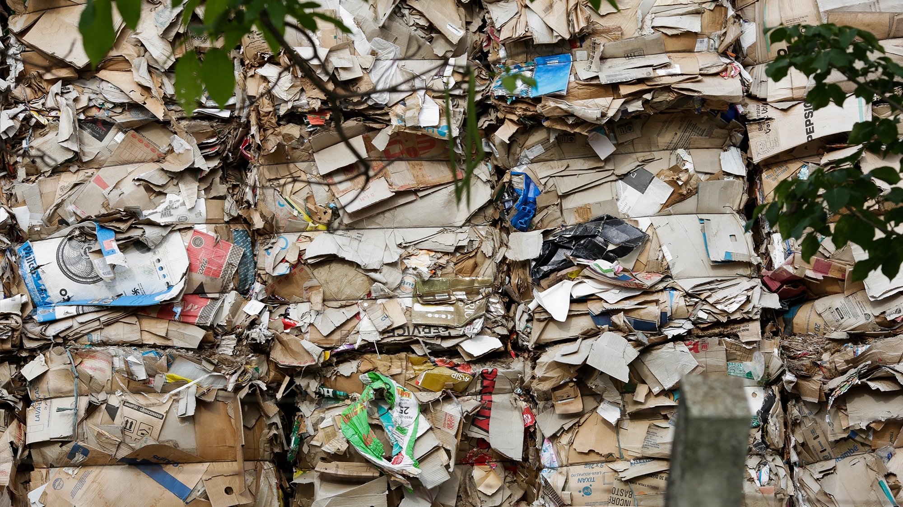
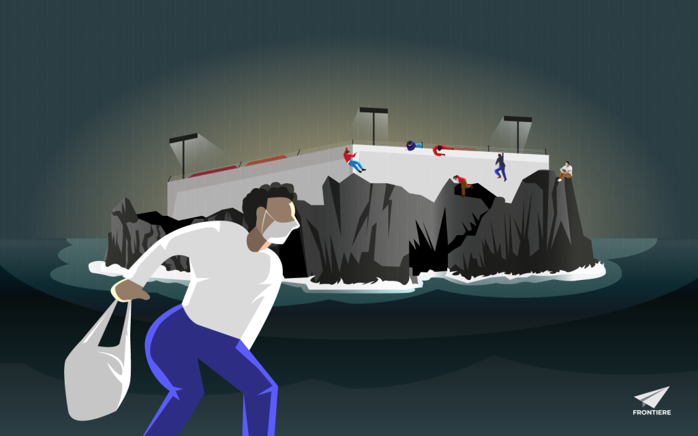

Hello! My name is Marco Dalla Stella. I'm an Italian data and investigative journalist based in NYC.
I'm currently honing my data skills at the LEDE Program. Pior to that, I completed a Master's degree in Data Journalism at Columbia Journalism School. I worked as a reporter and project coordinator at CLIP, the Latin American Center for Investigative Journalism.
Data
The following stories include original reporting and data gathering and analysis. To do that I used various tools and techniques that include Python, pandas, beautifulsoup.
Other works
Take a look at some of my work. All stories include original reporting and data gathering.
Tras los Pasos de Meco
CLIP
La firma costarricense Constructora Meco se ha expandido por varios países y, aún después de que la justicia de Costa Rica abriera una inestigación y pusiera en prisión preventiva, por variomeses, a su presidente Carlos Cerdas, la empresa seguí ganando contratos multimillonarios.
Spanish Google Sheets
What Will Brazil Do With Illegally Trafficked American Garbage?
Mother Jones
In September 2021, Brazilian environmental authorities fined Jaepel Papéis e Embalagens the equivalent of $8 million for importing household waste.
English Google Sheets
Forgotten in a Detention Center for Migrants in Italy
Frontiere News
This place makes you crazy. We are not humans anymore.

Diritti a Sunset Park, dove è la polizia a essere «Wanted»
Il Manifesto
Un’alba di pattuglia con gli attivisti di NYC ICE Wìatch, per impedire gli abusi dell’agenzia federale anti migranti irregolari, che nelle cosiddette «città santuario» non esita a operare sotto mentite spoglie per aggirare la legge. Una linea attiva 24 ore su 24 riceve segnalazioni, foto e video di elementi ritenuti «sospetti». Sempre pronto a intervenire, Chris confida nel fatto che essere bianco lo protegga. «Almeno lo spero»
Italian© 2023 — Marco Dalla Stella